Donc, Anthropic vient de construire un modèle d'intelligence artificielle qui a trouvé plus de bugs de sécurité en quelques semaines que la plupart des chercheurs en sécurité n'en trouvent au cours de toute leur carrière. Il a trouvé un bug dans OpenBSD qui se cachait depuis 27 ans. Il a trouvé un bug dans FFmpeg, le logiciel qui gère la vidéo sur pratiquement tout Internet, que 5 millions de tests automatisés ont raté. Et le fait est qu'ils ne sortent pas ce modèle pour le grand public.
Interface & Outils : Interface web / Présentation visuelle de rapport de vulnérabilité
Contenu textuel & Code : Texte descriptif : "Identifying vulnerabilities and exploits with Claude Mythos Preview" et "27 years Hidden bug in OpenBSD - Could remotely crash any server with a single connection"
Action / Démonstration : Affichage des résultats d'analyse de sécurité réalisés par le modèle d'IA Anthropic.
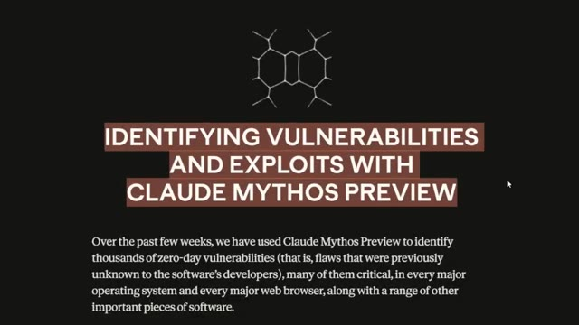
🔍 Agrandir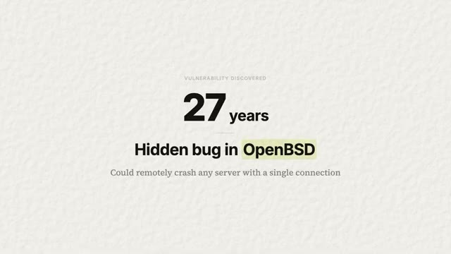
🔍 AgrandirEt je pense vraiment que cela devrait vous faire vous sentir beaucoup mieux, et non l'inverse. Laissez-moi donc vous expliquer. Qu'est-ce que Claude Mythos ? C'est un nouveau modèle qu'Anthropic développe en interne. Beaucoup d'entre nous en ont entendu parler lors de cette fuite de code de Claude. Mais pensez-y comme à la prochaine génération de Claude, leur modèle le plus puissant à ce jour. À l'heure actuelle, leur meilleur modèle public est Opus, Opus 4.6.
Interface & Outils : Diapositive de présentation textuelle.
Contenu textuel & Code : Texte : « UNRELEASED MODEL », « Claude Mythos Preview », et « Anthropic's next-generation AI — their most capable model yet. Not publicly released. ».
Action / Démonstration : Présentation du sujet et du modèle Claude Mythos par le créateur.
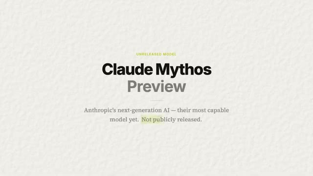
🔍 AgrandirEt Mythos le surpasse en réalité sur pratiquement tous les benchmarks. Et ce qui a vraiment attiré mon attention, c'est qu'ils ne l'ont pas entraîné à être un pirate informatique. Ils l'ont entraîné à être simplement très, très bon en écriture de code. Et être très bon en code l'a rendu très bon pour casser du code. Et c'est arrivé tout seul. C'est comme entraîner quelqu'un à être le meilleur serrurier du monde. On ne lui apprend pas à cambrioler des maisons, mais maintenant qu'il comprend si bien les serrures, il pourrait facilement aller cambrioler n'importe quelle maison. Et cette compétence est arrivée tout simplement gratuitement.
Interface & Outils : Présentation de benchmarks de modèles d'IA.
Contenu textuel & Code : Scores de performance : Mythos Preview (87.3% et 93.9%) vs Opus 4.6 (77.8% et 80.8%) sur les benchmarks SWE-bench.
Action / Démonstration : Comparaison des capacités de programmation et de performance des modèles d'IA.
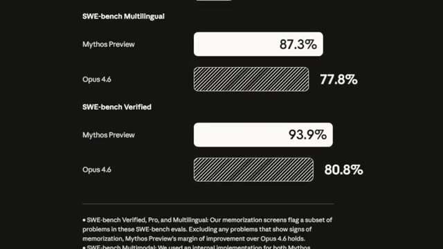
🔍 AgrandirAlors laissez-moi vous donner les chiffres parce qu'ils sont super, super fous. Il y a un test standard que l'industrie utilise pour mesurer à quel point l'IA peut corriger des bugs logiciels du monde réel. Ça s'appelle le SWE bench. Opus obtient un score de 80,8 %, ce qui est vraiment bien, mais Mythos obtient 93,9 %. Et ce n'est pas juste un petit bond progressif. C'est un énorme saut générationnel. Sur les benchmarks de cybersécurité, c'est-à-dire sa capacité réelle à trouver et exploiter des vulnérabilités dans ce code, Opus obtient 66,6 % et Mythos obtient 83,1 %. Mais tout cela n'est que des chiffres. Oublions les
Interface & Outils : Graphiques statistiques comparatifs de benchmarks d'IA sur fond texturé.
Contenu textuel & Code : Scores de performance SWE-Bench Verified et CyberGym comparant Opus 4.6 et Mythos Preview.
Action / Démonstration : Présentation des résultats de benchmarks comparatifs par le présentateur.
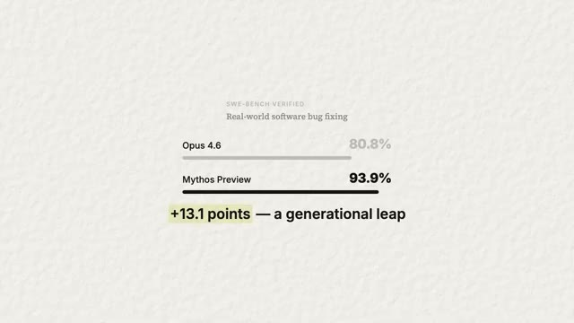
🔍 Agrandir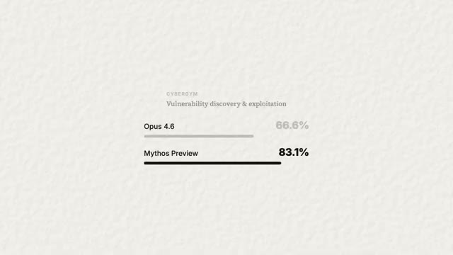
🔍 Agrandirbenchmarks. Voici ce qu'il a réellement fait dans le monde réel. Il a trouvé un bug dans OpenBSD qui était là depuis 27 ans. Il pouvait fondamentalement faire planter à distance n'importe quel serveur OpenBSD. Il a trouvé un bug dans FFmpeg, encore une fois, le logiciel qui gère la vidéo partout, que 5 millions de tests automatisés n'avaient jamais détecté. Et c'est un bug qui était là depuis 16 ans, sans bouger. Il a trouvé de multiples bugs sous Linux qui permettent à un utilisateur sans aucune permission de devenir administrateur. Et voici la partie qui m'a vraiment marqué.
Interface & Outils : Présentation vidéo / diapositive graphique
Contenu textuel & Code : Texte affiché : "REAL-WORLD FINDING", "27 years hidden", "OpenBSD", et "Remote crash vulnerability — a single connection could take down any server"
Action / Démonstration : Affichage de la diapositive pour illustrer la découverte d'une faille de sécurité vieille de 27 ans dans OpenBSD.
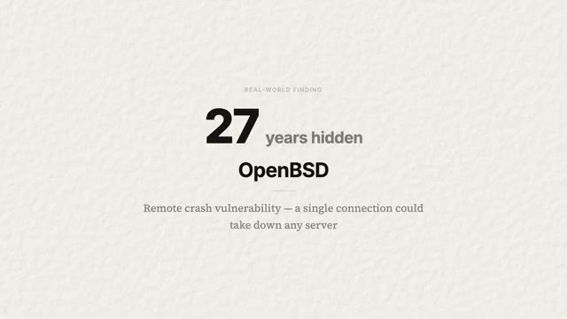
🔍 AgrandirIl ne se contente pas de trouver des bugs individuels. Il est capable de les enchaîner. Il peut trouver trois, four, cinq petites vulnérabilités et les relier entre elles pour en faire une attaque de cybersécurité complète. Et c'est exactement ce que font les hackers humains d'élite. Comme ceux que l'on voit dans les films qui tapent sur un vieux ordinateur comme ça avec la totalité de leurs bras. Voici donc le dilemme. Anthropic dispose désormais d'un modèle qui est incroyable pour trouver des failles de sécurité qui pourraient sauver Internet.
Interface & Outils : Diapositive de présentation graphique sur fond blanc texturé.
Contenu textuel & Code : Texte à l'écran : 'VULNERABILITY CHAINING', 'Linking small flaws into full exploits', et le schéma 'Bug 1 -> Bug 2 -> Bug 3 -> Full Attack'.
Action / Démonstration : Illustration visuelle du concept de chaînage de bugs pour former une attaque complète, accompagnant les explications audio.
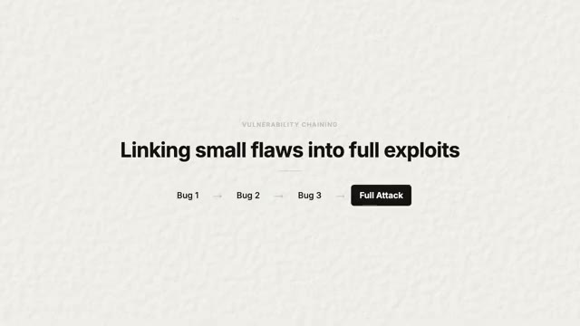
🔍 AgrandirMais si elle tombe entre de mauvaises mains, elle pourrait aussi détruire tout l'Internet. Alors imaginez s'ils sortaient tout simplement ce modèle publiquement demain. Chaque personne ayant de mauvaises intensions dispose désormais d'un outil qui est plus performant pour trouver des failles que la plupart des équipes de sécurité professionnelles. Ce n'est pas hypothétique. C'est littéralement ce que les benchmarks disent que ce modèle d'intelligence artificielle est capable de faire. Et ce ne sera pas le dernier modèle aussi performant.
Interface & Outils : Aucune interface visible.
Contenu textuel & Code : Aucun contenu technique ou graphique visible.
Action / Démonstration : Le présentateur s'exprime face caméra.
Tous les laboratoires d'IA construisent des modèles de codage meilleurs en ce moment même. Et si être bon en code signifie automatiquement être bon en piratage, alors chaque modèle de pointe que chaque entreprise entraîne en train de le faire est sur le point de devenir un meilleur hacker, qu'ils le veuillent ou non. J'ai regardé des podcasts où des chercheurs en IA qui sont dans le domaine depuis plus d'une décennie ont dit que s'il y avait un bouton juste devant eux pour arrêter la superintelligence non contrôlée et tout recommencer, ils l'appuieraient parce qu'on dirait un peu une course pour savoir quelle entreprise peut créer les meilleurs modèles et les capacités évoluent de manière exponentielle. Ce que Mythos fait aujourd'hui, des modèles open source plus petits
Interface & Outils : AUCUNE
Contenu textuel & Code : Texte à l'écran résumant le propos sur les modèles d'IA et le piratage.
Action / Démonstration : Présentation orale du sujet sans manipulation de code ou d'interface logicielle.
qu'on fera probablement en 12 à 24 mois. Le génie ne retourne jamais dans sa bouteille. Alors qu'est-ce qu'on fait ? On ne peut pas le désinventer. On ne peut pas garder le secret éternellement. Quelqu'un d'autre construira quelque chose tout aussi bien. On ne peut pas simplement détruire la connaissance. Ça va arriver. Et c'est là que le projet Glasswing entre en jeu. Et c'est là que mon avis sur toute cette affaire bascule vraiment, passant de effrayant à c'est exactement ce qui devrait se passer.
Interface & Outils : Présentation / Diapositive textuelle
Contenu textuel & Code : "Anthropic Initiative - Project Glasswing: Securing critical software for the AI era. Give the defenders a head start - instead of releasing publicly or locking it away"
Action / Démonstration : Affichage de la diapositive présentant l'initiative d'Anthropic pour illustrer le sujet de la sécurité logicielle à l'ère de l'IA.
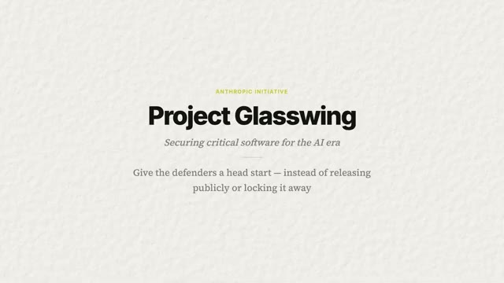
🔍 AgrandirParce qu'au lieu de sortir le modèle publiquement ou simplement de l'enfermer dans un coffre-fort, Anthropic a choisi une troisième option, qui consiste à le donner d'abord aux défenseurs. Ils se sont associés avec AWS, Apple, Google, Microsoft, NVIDIA, Cisco, CrowdStrike, JP Morgan, et une tonne d'autres. En gros, les entreprises qui construisent les logiciels sur lesquels tourne tout l'internet. Ces partenaires auront un accès direct à Mythos pour analyser leurs propres systèmes, trouver les bugs avant que les attaquants ne le puissent, et les corriger avant même que quiconque sache qu'ils existent. Anthropic l'a également ouvert à plus de 40 organisations qui gèrent des infrastructures logicielles critiques. Ils ont engagé 100 millions de dollars de crédits d'utilisation et ont fait don de 4 millions
Interface & Outils : Diapositive de présentation textuelle.
Contenu textuel & Code : Noms des partenaires de la coalition Project Glasswing (AWS, Apple, Google, Microsoft, NVIDIA, Cisco, CrowdStrike, JPMorganChase, Linux Foundation, Palo Alto Networks, Broadcom).
Action / Démonstration : Affichage des entreprises partenaires impliquées dans le projet de sécurité d'Anthropic.
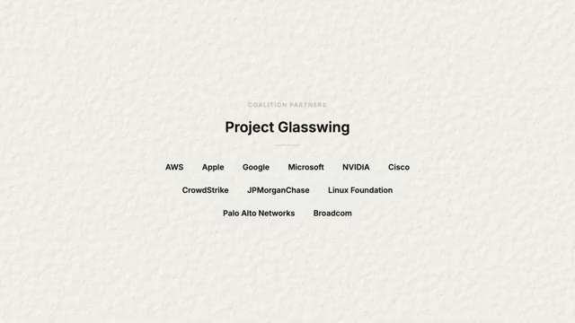
🔍 Agrandirdirectement à des groupes de sécurité open source. Et ils ont été en discussion avec le gouvernement américain. En plus de cela, ils se sont engagés à partager publiquement ce qu'ils ont appris dans les 90 jours. Et honnêtement, c'est peut-être la première fois qu'un grand laboratoire d'intelligence artificielle a essentiellement dit, nous avons construit quelque chose de trop puissant pour être publié, mais voici notre plan. C'est un précédent. Maintenant, que d'autres laboratoires suivent ou non va définir les prochaines années, les prochaines décennies de l'IA. Mais de toute façon, qu'est-ce que cela signifie réellement pour vous et pour moi ? Parce je sais que la plupart d'entre vous qui regardent ceci ne gèrent pas la sécurité dans une entreprise du classement Fortune 500. Vous êtes probablement juste une personne moyenne qui utilise un téléphone, un ordinateur portable,
Interface & Outils : AUCUNE
Contenu textuel & Code : AUCUNE
Action / Démonstration : AUCUNE
et à coder des trucs avec Cloud Code. Et c'est exactement ce que je suis. Voici donc la partie pratique. Si vous utilisez un téléphone, un navigateur ou n'importe quelle application, votre logiciel est sur le point de devenir plus sûr. Les bugs que Mythos trouve se trouvent dans le code qui fait fonctionner votre système d'exploitation, votre lecteur vidéo ou votre navigateur web. Et ces correctifs sont déjà en train d'être déployés. Vous ne le verrez pas vraiment se produire, mais vous recevrez une mise à jour logicielle un jour.
Interface & Outils : Présentation vidéo / Diapositive textuelle
Contenu textuel & Code : Texte à l'écran : "WHAT IT MEANS FOR YOU", "Your software is about to get more secure", et "Patches already rolling out to operating systems, video players, and web browsers you use every day"
Action / Démonstration : Le présentateur illustre ses propos avec une diapositive montrant l'impact de la sécurité sur les logiciels.
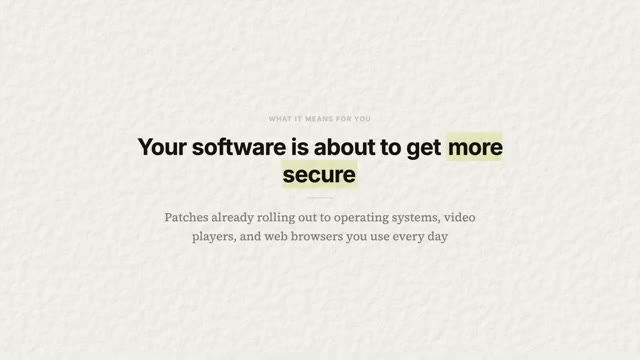
🔍 AgrandirEt derrière cette mise à jour se trouve une intelligence artificielle qui a découvert une vulnérabilité qu'un humain n'aurait peut-être jamais détectée. Et maintenant, elle a été améliorée. C'est l'une des premières fois que l'IA va directement rendre votre vie numérique plus sûre sans que vous ayez à faire quoi que ce soit. Espérons-le, du moins. Maintenant, si vous êtes propriétaire d'une petite entreprise, c'est là que ça devient intéressant, car la sécurité a toujours été un problème digne du Fortune 500.
Interface & Outils : Aucun
Contenu textuel & Code : Aucun
Action / Démonstration : Présentation orale face caméra
Les grandes entreprises embauchent des équipes rouges, effectuent des tests d'intrusion, paient des millions de dollars pour des audits de sécurité, mais les petites entreprises se contentent parfois d'un antivirus en croisant les doigts. Ce que fait Glasswing, c'est essentiellement démocratiser la sécurité de niveau Fortune 500 pour tout le monde. Lorsque Mythos trouve un bogue dans Linux ou dans un framework web sur lequel tourne votre site Internet, ce correctif vous parvient aussi.
Interface & Outils : Navigateur web affichant une interface minimaliste de présentation produit.
Contenu textuel & Code : Le texte 'SECURITY DEMOCRATIZED', 'Fortune 500 Security', 'Everyone', et 'When Mythos finds a bug in Linux or a web framework, that fix reaches you too'.
Action / Démonstration : Présentation visuelle de la proposition de valeur de l'entreprise Glasswing / Mythos concernant la démocratisation de la sécurité informatique.
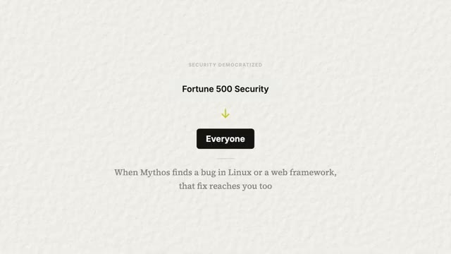
🔍 AgrandirVous bénéficierez donc de la même analyse par IA qui protège l'infrastructure d'Apple et de Google. Vous ne payez pas pour cela. Vous ne savez même pas ce qui se passe, mais vous en êtes protégés. Et à mesure que cette technologie mûrira, ces outils finiront par devenir directement accessibles aux plus petites entreprises. Imaginez pouvoir analyser votre propre code source avec la même IA qui a trouvé des bugs vieux de 27 ans dans des systèmes d'exploitation. C'est vers cela que nous nous dirigeons.
Interface & Outils : Aucune interface logicielle visible.
Contenu textuel & Code : Aucun code, terminal ou donnée affiché à l'écran.
Action / Démonstration : Aucune action technique ou démonstration en cours.
Donc, laissez-moi vous laisser avec ce que je pense que cela signifie vraiment. Je pense qu'Anthropic vient de faire la bonne chose, et je pense qu'ils méritent vraiment beaucoup de crédit pour cela. Ils avaient un modèle qui aurait probablement pu leur rapporter énormément d'argent. Ils gagnent déjà énormément d'argent, mais vous voyez ce que je veux dire. Cela va aussi générer beaucoup de buzz pour eux. S'ils sortaient ça demain, ce serait absolument fou. Tout le monde sur Internet dans le monde de l'IA en parlerait.
Interface & Outils : Aucun logiciel ou interface affiché.
Contenu textuel & Code : Aucun code, terminal ou donnée visible.
Action / Démonstration : Le présentateur parle directement à la caméra sans manipulation technique ni démonstration.
Au lieu de cela, ils ont ralenti le processus. Ils ont élaboré un plan de déploiement et ont donné une longueur d'avance aux défenseurs. Ce n'est pas le choix le plus facile, mais c'est le bon choix. Oh, encore une chose. Au moment où je montais cette vidéo, Boris Cherney venait de tweeter, le créateur de CloudCode. Il a dit : « Mythos est très puissant et devrait sembler terrifiant. Je suis fier de notre approche qui consiste à le présenter de manière responsable aux cyberdéfenseurs plutôt que de le lancer généralement dans la nature. »
Interface & Outils : Capture d'écran textuelle d'un tweet ou d'une citation.
Contenu textuel & Code : Citation de Boris Cherney : "Mythos is very powerful and should feel terrifying. I am proud of our approach to responsibly preview it with cyber defenders rather than generally releasing it into the wild."
Action / Démonstration : Affichage à l'écran d'une citation externe pour illustrer le propos du présentateur sur les mesures de sécurité et les retours de Boris Cherney.
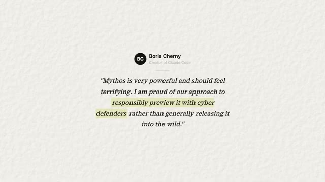
🔍 AgrandirTout à fait d'accord. Beau travail, Boris et l'équipe de CloudCode. Voici donc mon avis honnête. Ce que j'attends vraiment de voir, c'est si cela devient réellement le nouveau standard ou si c'est juste un truc qu'un labo a fait une seule fois. Car la vérité inconfortable, c'est que ce n'est pas un événement unique. Chaque génération de modèles d'IA sera de plus en plus douée pour trouver des failles. La courbe exponentielle ne s'aplatit pas.
Interface & Outils : Aucune interface visible
Contenu textuel & Code : Aucun code source, terminal ou donnée affiché
Action / Démonstration : Le présentateur s'exprime face caméra
Ça va devenir de plus en plus raide. Donc la question est, est-ce qu'OpenAI fera de même ? Est-ce que Google le fera ? Est-ce que Meta le fera ? Les laboratoires qui prennent cela au sérieux, qui élaborent des plans de sécurité avant d'en avoir besoin, seront ceux auxquels nous ferons confiance pour la prochaine génération. Ceux qui ne le font pas seront ceux qui feront les grands titres qui nous terrifient tous. La nouvelle la plus dure, c'est qu'il s'agit d'une course aux armements et qu'elle ne se terminera peut-être jamais.
Interface & Outils : Aucune interface logicielle ou de programmation visible.
Contenu textuel & Code : Texte graphique posant la question des actions futures d'OpenAI, Google et Meta.
Action / Démonstration : Le présentateur s'exprime face caméra pour introduire une question clé.
Mais pour la première fois, les défenseurs ont réellement pris une bonne longueur d'avance, et cela compte plus que la plupart des gens ne le réalisent. Mais bref, c'est tout pour celui-ci. Le domaine évolue super vite et je m'amuse beaucoup à rester à l'affût de tout cela. Alors dites-moi ce que vous en pensez dans les commentaires. Et si vous voulez rejoindre ma communauté School gratuite où l'on discute intensément de ce genre de sujets chaque jour, le lien est dans la description et je vous dis à la prochaine. Merci à tous.
Interface & Outils : Aucun éditeur ou outil technique affiché.
Contenu textuel & Code : Texte de conclusion sur la sécurité et les défenseurs.
Action / Démonstration : Conclusion de la vidéo par le présentateur.